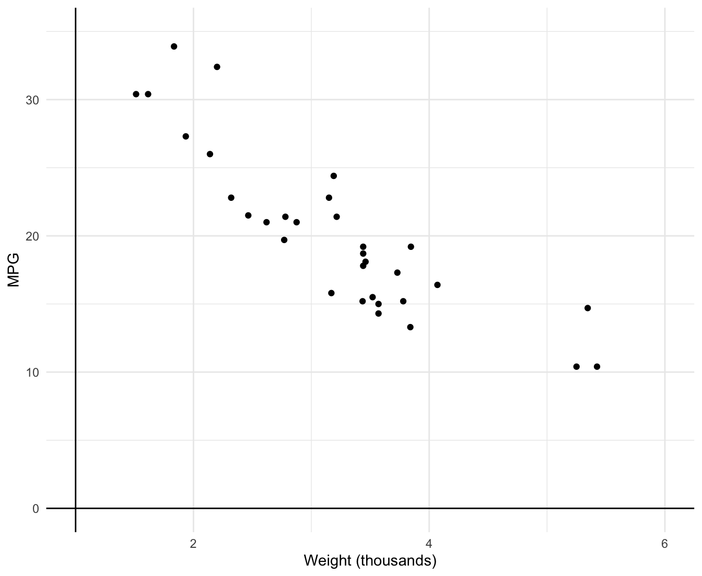
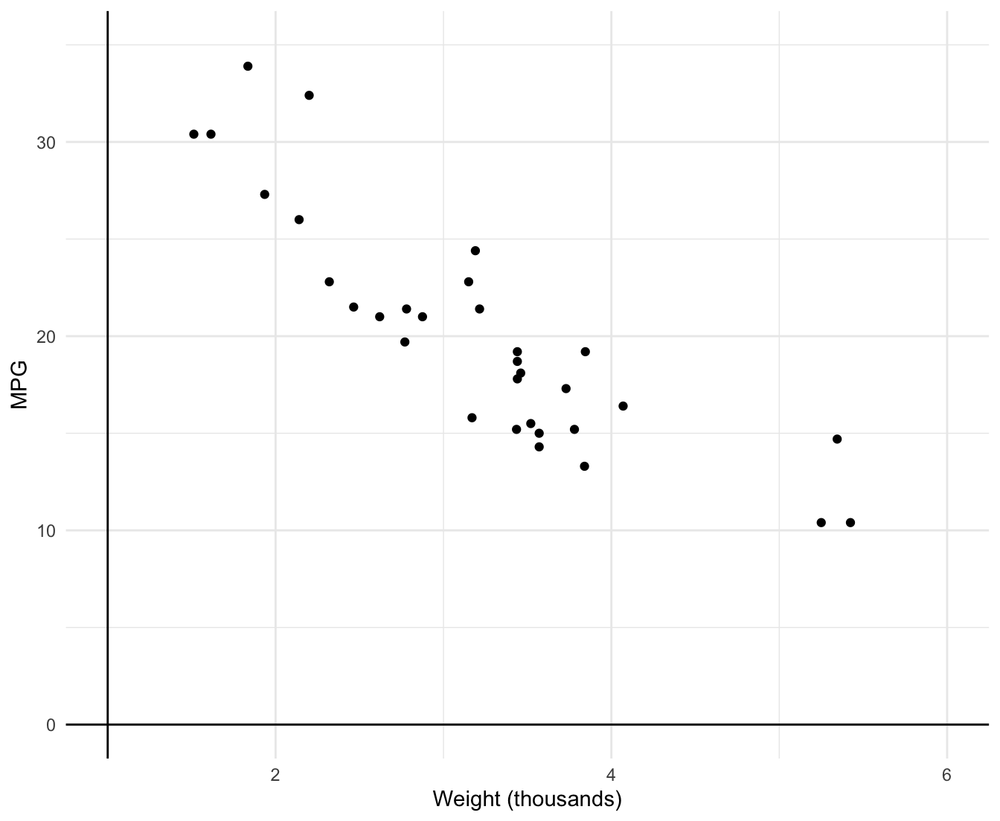
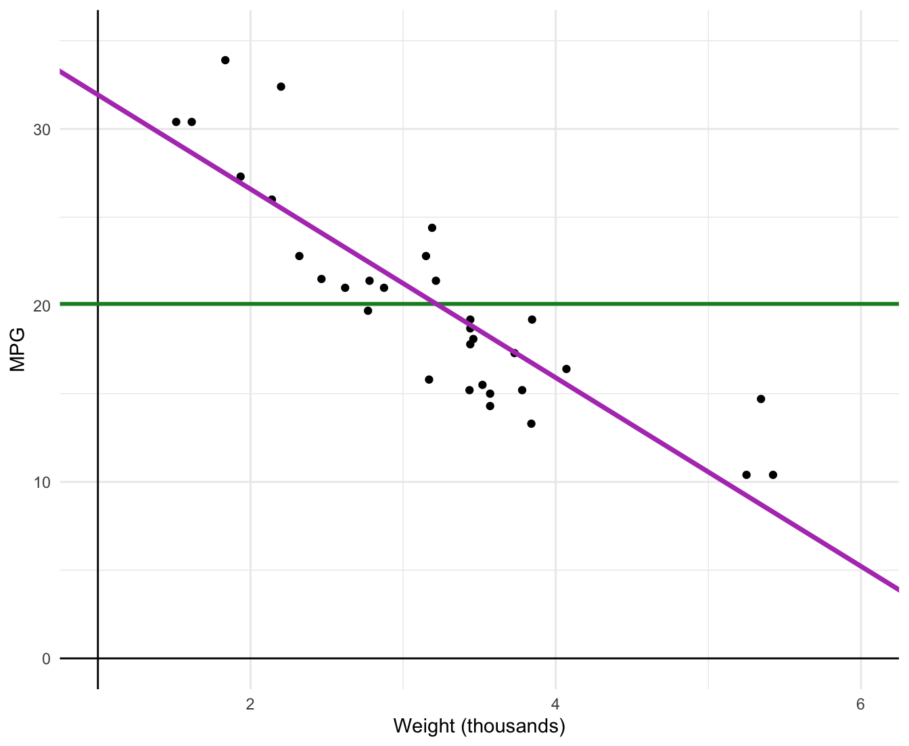
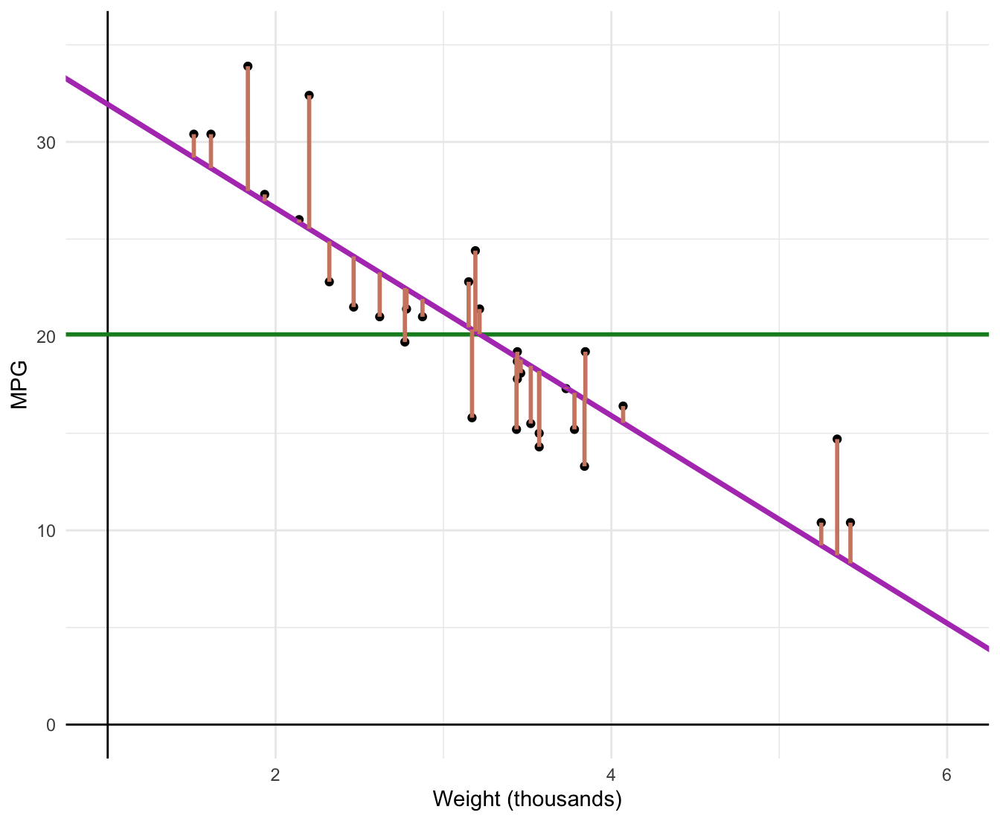
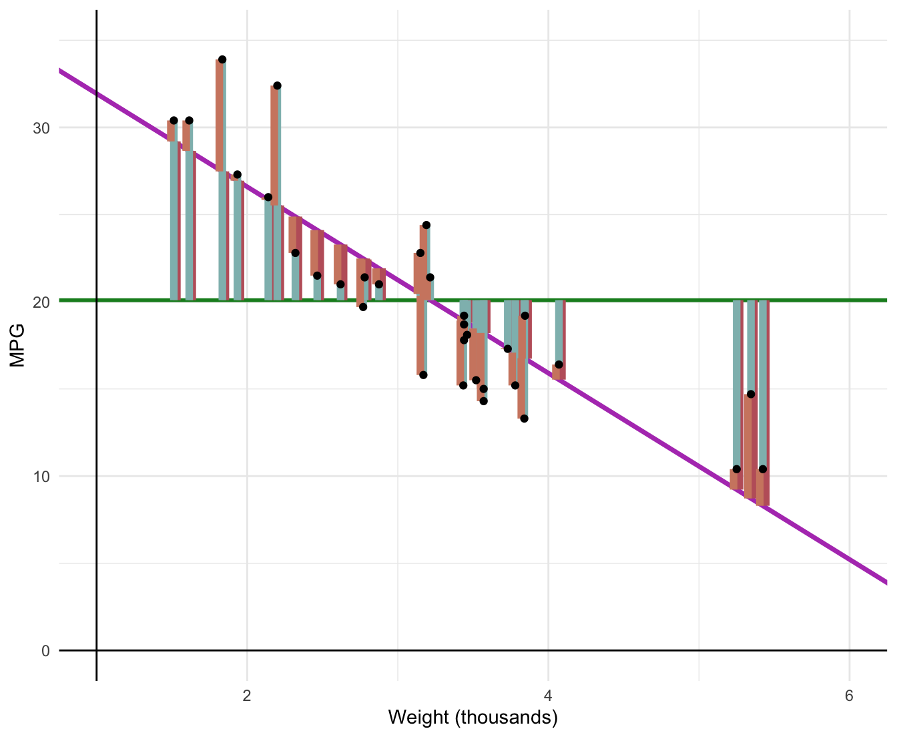

Coordinate system already present. Adding new coordinate system, which will
replace the existing one.
Say there are two regressions Regression 1 and Regression 2 with the:
The question is: Which fitted regression line “explains/fits” the data better?

Regression 1 vs Regression 2
The coefficient of determination, \(R^{2}\), is the fraction of the variation in \(y_{i}\) “explained” by \(x_{i}\).
Residuals remind us that there are parts of \(y_{i}\) we cannot explain:
\[ y_{i} = \hat{y}_{i} + \hat{u}_{i} \]
\[ \bar{\hat{u}} = 0 \Rightarrow \bar{y} = \bar{\hat{y}} \]
Total Sum of Squares (TSS) measures variation in \(y_{i}\):
\[ \color{#BF616A}{TSS} \equiv \sum_{i = 1}^{n} (y_{i} - \bar{y})^{2} \]
Explained Sum of Squared (ESS) measures the variation in \(\hat{y}_{i}\):
\[ \color{#8FBCBB}{ESS} \equiv \sum_{i = 1}^{n} (\hat{y}_{i} - \bar{y})^{2} \]
Residual Sum of Squares (ESS) measures the variation in $ _{i}$:
\[ \color{#D08770}{RSS} \equiv \sum_{i = 1}^{n} \hat{u}_{i}^{2} \]
This means that we can show \(\color{#BF616A}{TSS} = \color{#8FBCBB}{ESS} + \color{#D08770}{RSS}\)
Step 01: Plug \(y_{i} = \hat{y}_{i} + \hat{u}_{i}\) into TSS
\[\begin{align*} \color{#BF616A}{TSS} &= \sum_{i = 1}^{n} (\hat{y}_{i} - \bar{y})^{2} \\ &= \sum_{i=1}^{n} ([\hat{y}_{i} + \hat{u}_{i}] - [\bar{\hat{y}} + \bar{\hat{u}}])^{2} \end{align*}\]
This means that we can show \(\color{#BF616A}{TSS} = \color{#8FBCBB}{ESS} + \color{#D08770}{RSS}\)
Step 02: Recall that \(\bar{\hat{u}} = 0\) & \(\bar{y} = \bar{\hat{y}}\).
\[\begin{align*} \color{#BF616A}{TSS} &= \sum_{i=1}^{n} ([\hat{y}_{i} + \hat{u}_{i}] - [\bar{\hat{y}} + \bar{\hat{u}}])^{2} \\ &= \sum_{i=1}^{n} ([\hat{y}_{i} + \hat{u}_{i}] - \bar{\hat{y}})^{2} \\ &= \sum_{i=1}^{n} ([\hat{y}_{i} - \bar{y}] + \hat{u}_{i}) ([\hat{y}_{i} - \bar{y}] + \hat{u}_{i}) \\ &= \sum_{i=1}^{n} (\hat{y}_{i} - \bar{y})^{2} + \sum_{i=1}^{n} \hat{u}_{i}^{2} + 2\sum_{i=1}^{n} \left( (\hat{y}_{i} - \bar{y}) \hat{u}_{i} \right) \end{align*}\]
Step 03: Notice ESS and RSS
\[\begin{align*} \color{#BF616A}{TSS} &= \color{#8FBCBB}{\sum_{i=1}^{n} (\hat{y}_{i} - \bar{y})^{2}} + \color{#D08770}{\sum_{i=1}^{n} \hat{u}_{i}^{2}} + 2\sum_{i=1}^{n} \left( (\hat{y}_{i} - \bar{y}) \hat{u}_{i} \right) \\ &= \color{#8FBCBB}{ESS} + \color{#D08770}{RSS} + 2\sum_{i=1}^{n} \left( (\hat{y}_{i} - \bar{y}) \hat{u}_{i} \right) \\ \end{align*}\]
Step 04: Simplify
\[\begin{align*} \color{#BF616A}{TSS} = \color{#8FBCBB}{ESS} + \color{#D08770}{RSS} + 2\sum_{i=1}^{n}\hat{y}_{i}\hat{u}_{i} - 2\bar{y} \sum_{i=1}^{n} \hat{u}_{i} \end{align*}\]
Step 05: Shut down that last two terms by noticing that:
\[\begin{align*} 2\sum_{i=1}^{n}\hat{y}_{i}\hat{u}_{i} - 2\bar{y} \sum_{i=1}^{n} \hat{u}_{i} = 0 \end{align*}\]
You will prove this in an assignment
Then we have:
\[\begin{align*} \color{#BF616A}{TSS} = \color{#8FBCBB}{ESS} + \color{#D08770}{RSS} \end{align*}\]
. . .
Some visual intuition makes all the math seem a lot simpler
Plot our data
Coordinate system already present. Adding new coordinate system, which will
replace the existing one.
\[ \color{#148B25}{\overline{\text{MPG}}_{i}} = 20.09 \]
Warning: Using `size` aesthetic for lines was deprecated in ggplot2 3.4.0.
ℹ Please use `linewidth` instead.\[ \color{#BF616A}{\text{TSS}} \equiv \sum_{i=1}^n (y_i - \bar{y})^2 \]
\[ \color{#148B25}{\widehat{\text{MPG}}_{i}} = 37.3 - 5.34 \cdot \text{weight}_i \]

\[ \color{#8FBCBB}{\text{ESS}} \equiv \sum_{i=1}^n (\hat{y}_{i} - \bar{y})^2 \]
\[ \color{#D08770}{\text{RSS}} \equiv \sum_{i=1}^n \hat{u}_i^2 \]

\[ \color{#BF616A}{\text{TSS}} \equiv \sum_{i=1}^n (Y_i - \bar{Y})^2 \]
\[ \color{#8FBCBB}{\text{ESS}} \equiv \sum_{i=1}^n (\hat{Y_i} - \bar{Y})^2 \]
\[ \color{#D08770}{\text{RSS}} \equiv \sum_{i=1}^n \hat{u}_i^2 \]
Warning: `position_dodge()` requires non-overlapping x intervals.
`position_dodge()` requires non-overlapping x intervals.
What percentage of the variation in our \(y_{i}\) is apparently explained by our model? The \(R^{2}\) term represents this percentage.
Total variation is represented by TSS and our model is capturing the ‘explained’ sum of squares, ESS.
Taking a simple ratio reveals how much variation our model explains:
\(R^{2} = \dfrac{\color{#8FBCBB}{ESS}}{\color{#BF616A}{TSS}}\) varies between 0 and 1
\(R^{2} = 1 - \dfrac{\color{#D08770}{RSS}}{\color{#BF616A}{TSS}}\), 100% minus the unexplained variation
\(R^{2}\) is related to the correlation between the actual values of \(y\) and the fitted values of \(y\).
So what? In the social sciences, low \(R^{2}\) values are common.
Low \(R^{2}\) does not necessarily mean you have a “good” regression:
Worries about selection bias and omitted variables still apply
Some ‘powerfully high’ \(R^{2}\) values are the result of simple accounting exercises, and tell us nothing about causality